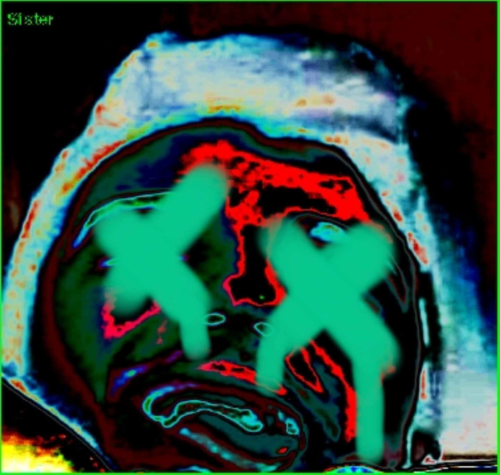
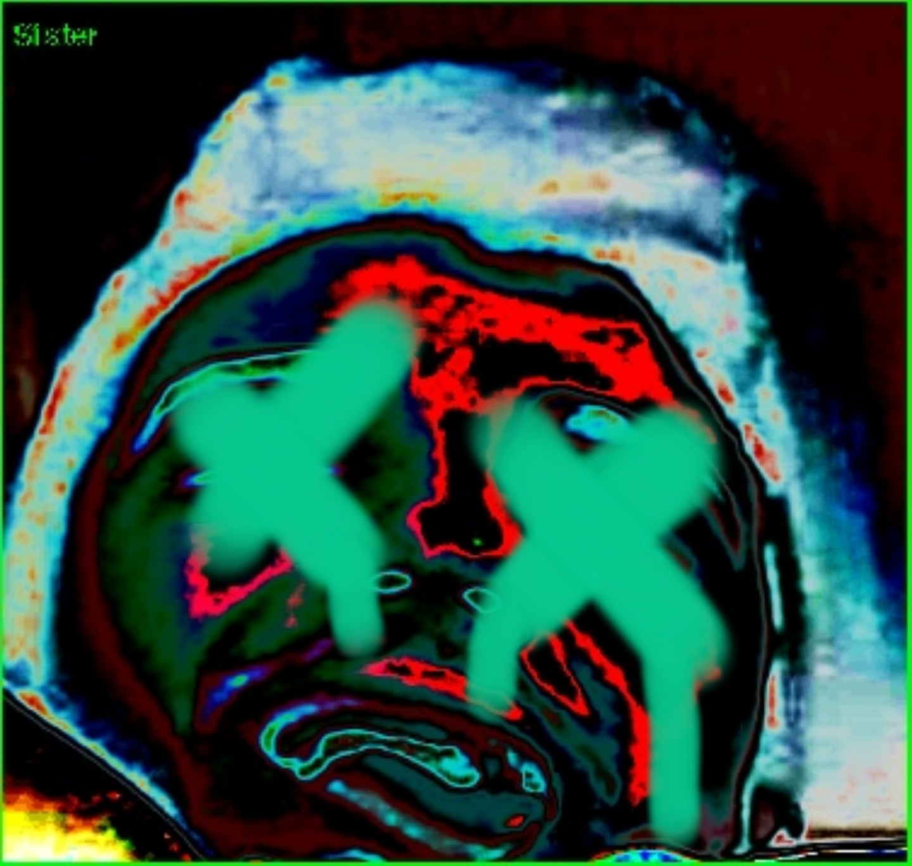

Several things stood out to me in this text. One is that WordNet was only the basis from which ImageNet was developed. In order to define the labels supplied by the WordNet database, Paglan and Crawford used crowdsourced surveys. This means that the AI algorithm became much more diversified than the systems it was meant to represent, which were probably developed by a few guys in a computer lab. This resulted in a much more random and seemingly arbitrary distribution of labels to people-- hence many being “wildly off base,” yet somehow racial bias and profiling was still heavily pervasive. To me, this is the scariest part. That even after democratizing an artificial intelligence, it still suffers from the same problematic flaws as its more devious corporate counterparts.
I believe the issue is twofold. The first issue is of course hegemonic. Many social inequalities and biases exist within everyday life, protected by their own precedent. Because they’ve been established systemically as “the norm,” most do not question them, or even realize they exist. And thus as many answered the survey, their subconscious biases worked their way into the dataset. When an entire group of people have the same subconscious biases, this is hegemony, and it is reflected in the dataset more heavily than if just an individual held said bias. This system did a good job to expose hegemony, I think, because an AI doesn’t understand the contextual subtleties of how the bias exists safely nested in its hegemonic roots. Instead, its ham-handed in its delivery-- spits out our biases back at us so we can’t help but become painfully aware of them.
The second issue is the inherent structure of the AI. Who can decisively define what “loser,” a “slut,” or a “wrongdoer” look like. It’s impossible because those are entirely subjective tags based on perception and context-- which the AI certainly doesn’t have. Boiling down a person to a single label is, of course, preposterous as each individual contains so many years of purely distinct and unique experience, and most people’s lives are a mixed mess of countless ideas and constructions that a whole list of labels couldn’t do justice. Starting from the labels and working out is entirely a backwards way of thinking, because then the tags must be defined some way, even if they have no purpose being in the dataset. A slightly-- emphasis on slightly-- less problematic way of making the dataset would have been letting the crowdsourced surveyors define their own labels and then look for trends. Even then hegemonic biases would have still worked their way into the AI, because social biases are amplified when people are boiled down and commoditized. This capitalist frame of mind relies on demographic labels for product targeting, which are all based off stereotypes, tropes, and generalizations-- fitting people into castes and groups to make money off of them. Aside from the security function, these kind of AI recognition software are used as a tool to commoditize people. Thus, the deepest inherent problem is in their intended use. As the article stated, “Any flaws in these data sets have already spread far and wide,” so at this point the most useful thing we can do is be aware.
 
